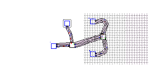
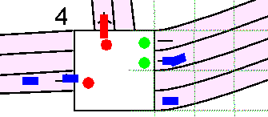
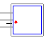
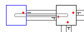
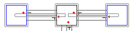
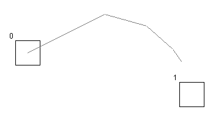
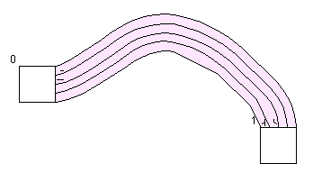

1. Editor
 a. Interface
a. Interface
 b. Usage
b. Usage
 c. From maps to sims
c. From maps to sims
2. Simulator
3. Evaluation Tools
4. An Example Session
5. Algorithms
Editor Usage
The Tools and their use:
- Center: click the center button to center the map on the point where editing began
- Scroll: click and drag over the map to scroll
- Zoom: left click with the mouse to zoom in and right click to zoom out within the margins of 25% and 250%
- the Zoom Box will show the current zoom factor.
The Zoom Tool is the standard selected tool.Maximum zoom out:
Maximum zoom in:
 - Select: click on any node or road to select it, or, alternatively,
click-and-drag to select elements in a section of the map.
A selected node:

A selected road:

A part of an infrastructure selected:

If you then right click on the selected objects a menu will apear giving you the option to Delete or change the Properties of the selected.
Properties will show the Configuration Dialog, in which the following can be changed depending on what was selected:- Road:
- number of lanes
- rules for each lane
- type of road users
- Node: simply shows number of connected roads and ID (-1 if map has not been validated yet).
- Road:
- Node: select the type of node you wish to create from the Tool Specific Box and click to create create one. Nodes must stand a minimum distance apart.
- Road: click and drag to place a road between nodes. If you release before reaching another node,
you will be creating a turn; move and click the mouse a couple of times more to make fluent turns.
Turn creation in progress:

Turn finished: (the only way to change it now is to delete this one and make a new one)

Note: turns look best ik you keep the distance between the nodes greater than 10. - Configure: click to display Configure Dialog, then click with the select tool infrastructure components to display their information and settings.
When you start the Editor you get a blank map and the Zoom Tool selected.
From here you can either load a map or start one from scratch.
An Example Session explains step-by-step map creation.